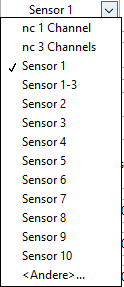

1 Version
This version of the documentation was written for the Dashboard version v5.3.2.16. For older documentation look at the following link:
2 ICOtronic System components
The graphic below provides an overview about the ICOtronic system components. It consists of the following main parts:
- Sensory Tool Holder (STH)
- Stationary Transceiver Unit (STU)
- Signal Processing Unit (SPU)

3 Software and network Settings for your PC
First, you need a Laptop running Windows and administrator privileges. You need the “LabView Runtime” installed on the Laptop, download link ->
http://www.ni.com/download/labview-run-time-engine-2018/7383/en/
CAUTION: it has to be the 2021 SP1 (32-bit) version !!!
You have to use the ICOtronicRemotePanel to connect to the Dashboard.
After connecting the Laptop via the Ethernet Cable to the SPU, the correct network settings have to be configured. Therefore, set the network configuration of the interface that is going to be used with the SPU as illustrated below.

If required, please reboot your Laptop after changing the network settings.
4 Real-Time-Dashboard
Use the “ICOtronicRemotePanel” then open the program. Now it will open the following window in which you have to input the IP-Address of the Dashboard. The input should be: 192.168.1.115

With a press on “connect to SPU” the program should connect to the Dashboard.
The momentary system time of the computer can be set as the momentary system time of the SPU with the “Sync Time” button.
The Dashboard contains five tabs: Stability, Raw data view, Replay, System and Database. The header of the Dashboard, which is active on all the mentioned tabs, has a Connection identifier and the ICOtronic logo.
If the system is connected to a sensory tool holder, the identifier turns blue. After disconnection, it turns white again.
 <——->
<——-> 
4.1 System Tab
The system tab consists of 4 quarters. The lower right corner containing information about the signal quality and the CPU load.

4.1.1 Connection sub part
In the upper left corner are the functions for the holder connection. On the top is a drop-down menu to choose the wanted connection type. With the “->” button it can be activated. On the right side of the “->” button is the momentary active connection type. The right most button “AutoConnect Off/On” can be used to deactivate and activate the need for putting a TRUE to the digital connection pin for connecting in the “Static DI” mode. If it is set to “AutoConnect On” the system will connect to a holder without a TRUE on the connection pin. Attention: The holder ID pins have to be set within the time frame of 10ms starting with the first TRUE of a holder pin!!! The left list contains all the momentary defined “Static DI” sensor&rule configurations. Below this list you can see the momentary per Digital IN chosen ID.

With the “Delete Connect ID” button you can delete the momentary highlighted ID. In the right list all STHs are listed that are found by the system and are ready to connect. You can see the name and the Bluetooth address of the STHs. The “STOP” , “CONNECT” buttons are used to connect/disconnect the system in the “Dashboard” connection mode. The multiple green radio-buttons are used to select the chosen Sensors if the system is used in the “Dashboard” connection mode.
4.1.2 Rule & Sensor config sub part
2 tabs can be found on the upper right side. These are the “Rule Engine configs” and “Sensor configs”. In these 2 tabs you can see the momentary loaded configurations for “Static DI” on the system. Additionally in the “Sensor configs” tab you can highlight a holder by clicking on it and at the bottom below you can choose a rule from the drop-down menu and choose a connection ID you want to set. When pressing the “Load Sensor” button you can load the sensor&rule config into the list of loaded connection options on the top left. Beside the 2 tabs you can see the OPC server URL which is needed if you want to connect/control the system via OPCUA.
4.1.3 Logging & Settings sub part
On the lower left side you can find the “Logging” tab. This tab is used for recording a process and shows the status of the digital inputs. If the “Record at connect” button is clicked, it will start the recording when connected to a holder. If not it can be started with the “Start Record” button. When the system is recording this button will become a button to stop the recording. The Identifier “Storage mounted” shows blue if a USB-device is connected. Below it shows the “Recording” identifier which is red if a record is being made at the moment. Below you can see the size of the momentary recording and the free space of the mounted USB.
Attention: the system only works with USB-devices formatted to FAT32-format!!!
The one identifier to the right show if the digital input for recording is set by the hardware. (The digital input for recording can be used to start and stop recordings outside of the dashboard). The 3 rightmost status identifier show if the DI for the activation of the momentary used rule is set, the rule is allowed to change parameters (meaning the rule is set to active) and the last one shows if the system is momentary changing the overrides because of the defined rules.

The “Settings” tab is used to reboot the system and to change the system time. On the bottom you can see the “Reboot System” button. The SPU will initialise a reboot of the system when this button is pressed. The “Reboot STU” button can be used to reset the connected Transceiver Unit. The “Average data OPC-SErver [ms]” configuration is used to change the datarate of the system if the OPCUA connection is used. On top you can 2 text-fields. The upper one is to define the new system time and the lower one is to set the format of the time, shown on the topmost right part of the dashboard. The button “Set Time” is used to set the time given in the text-field to the system time. The button with the calendar and clock can be used to open a new window with a calendar and the clock to set the time.

In this new window you can use the “Aktuelle Zeit verwenden” button to set the date and time to the momentary system time. With a press of the “OK” button will the selected time be written into the text-field.
4.1.4 Connection types
On the left side you can choose a connection type with the drop down menu. On the right side you can see the momentary active connection type. By pressing the “->” button between these two you can update the active type to the chosen type.

You can chose which sensors of the chosen holder you want to use with the radio buttons below the list of found holders, with the exception of the “Static / DI” mode. Chosen sensors are green. Note that if you use more than one sensor with a holder which only has one sensor the other two channels will be useless signals from not connected PINs inside the holder. The system will connect in the 1-channel mode if only 1 sensor is selected. The system will connect in the 3-channel mode if more than 1 sensors are selected. If you select more than 3 sensors will the system only use the first 3 selected sensors. The channels are always from the lowest sensor number as channel 1 and the highest channel number as channel 3.

If the radio button “1,8V Ref” is used to change the ADC-reference Value of the connected holder from the VDD(3,3V) to 1,8V. This has to be used when you for example use the +-40g 3-axis accelerometer. Attention: The holder can only use 1 reference voltage at the same time so if you use multiple sensors which have different needed reference voltages then at least 1 will always give wrong values!!!
4.1.4.1 Dashboard / OPC UA
In this mode you can select the STH of your choice from the “Device list” and press “Connect”. With “Stop”, you can disconnect from the STH. After disconnection the Dashboard needs a few seconds before it starts searching for STHs again.

4.1.4.2 Static / DI
In this connection mode you can use the predefined connection list (seen on the “System” tab) and the digital inputs of the system to control the connection and parameters of the system. (How to add a rule&sensor combination to the connection list see the chapter “Rule & Sensor config sub part” of the “System tab” chapter) The ID of the connection list corresponds to the digital holder inputs of the system in a binary format. (Example: ID 3 represents an input of 00000011 on the 8 input pins) To start a connection you need to set the digital input for connection to high. At this moment the system will connect to the element of the list chosen by the digital inputs. The momentary chosen input can be seen below the connection list.
If the “AutoConnect Off/On” button is set to “ON” then the system will connect without the need to set the connection pin to high the moment the ID pins are set to TRUE. (Be careful that the connection ID pins have to be set in a time frame of 10ms)
Attention: Never change the given ID while the system is connected to a holder. First disconnect the system, then change the ID and after that start a new connection!!!
4.2 Database

This tab is used to load and save the configuration of rules and sensors. It can be split into 4 parts. The first part is on the top and has the system controls. The middle part is used to configure the sensors. The bottom part on the bottom is used to configure the rules. The right most part of this sub part is the message screen. It shows the last few operations done in the “Database” tab. With a click on the “Clear Messagehistory” button the message history can be cleared.
4.2.1 System sub part

The leftmost buttons are used to load the momentary detected sensor and rule lists into the running system or load the momentary used lists from the running system back to the lists below. The lists can also be saved to the local memory of the system or an USB-stick. The “Load/Save to local Config” buttons can be used to load/save a configuration on the local system. With “Load/Save from/to file” it will not use the local config file but the parameters on the right side of these 2 buttons. The “Speicherort” drop down can be used to change between local system and USB. The “file” text field can be used to give a name to the configuration or name the to be loaded file.
4.2.2 Sensor sub part

In this subpart you can see the defined sensors of the sensor list and change them. The list on the left side shows the defined sensors. You can highlight a sensor by clicking on it. With the “Delete Sensor” button you can delete the chosen sensor from the list. If you press the “Sensor ->” button the values of the chosen sensor will be loaded from the left list into the configuration fields on the right side. The list on the right side shows all holders momentary found by the system in close proximity. By clicking one holder it will be highlighted. If you press the “->” button the values of the chosen holder will be loaded into the configuration fields below. In the fields below you can find the configurations of the holder for the sensor list. You can change the IFT value offsets/factors of the holder on the rightmost fields. The “Sensor ID” is the ID you want to give the holder configuration in the sensor list. If this ID is already defined will it be overwritten when saving. The “MacAdr” is the MAC-Address of the holder and defines which holder will be connected. The “name” is a name which can be given to the sensor which will be shown on the “Stability” tab when the sensor is connected and can be chosen freely. The “description” can be filled for example with information about this sensor. The “Channels” drop-down menu is used to define which channels the chosen holder uses in this sensor entry.

There are some predefined selections. Different selections can be made by choosing the “<Andere…>” option. Now it will want an binary 16-bit input for the chosen senors. All “0” before the first used “1” kann be left out. The sensor 1 is here the LSB. So for example if you want to connect to the 1st, 5th and 10th sensor you have to type in “1000010001”. The MSB bit is used to define the Reference voltage. If it is “1” the 1,8V reference voltage will be used. With the “Add/Update Sensor” button the parameters can be written into the sensor list on the left.
4.2.3 Rule sub part

This sub part has a list of all defined rules on the left side. The rule “0” is always there, can not be deleted and is using the momentary parameters of the dashboard instead of predefined parameters. The “Parameters” box shows a list of all the parameters of the chosen rule. With the button “Delete Rule” the highlighted rule will be deleted. When pressing the “Rule ->” button the parameter of the chosen rule will be loaded into the configuration fields on the right side. In the fields on the right side you can chose a “Rule ID” and give it a name. In the fields below you can set the parameters for the “Stability” tab. A description of these parameters can be found in this manual in the chapter “Stability tab”. Additionally you can chose a “Base Rule ID” here. If you choose a rule different from “0” then all parameters which are given as follows will load parameters of the chosen “Base Rule”:
- mode: “from Baserule” option
- window length: 0
- upper/lower Threshold: <0
- ramp: 0
- stability Channel: “from Baserule” option
- minimum IFT level: <0
- deadtime: 0
- feed/spindle Override: >125
- feed/spindle Reduction Factor: >125
- low/high-pass filter: <0
This can be used if you want to use the same parameter from a predefined set and only have to change this rule to change more rules automatically. In the “description” field the rule can be given a description. With the “Add/Update Rule” button the configuration can be written into the list. If a rule with the chosen “Rule ID” already exists, it will be overwritten with the new values.
4.3 Replay Tab

In this tab old recorded files from the USB are shown. Furthermore it allows you to recalculate the IFT value for the stored files.
You will see a list with all the recordings stored on the connected USB. Choose the recording you want to see, highlight it by pressing it and the press the “Load File” button to start the replay. Now the chosen file will be loaded.

You can see the information of the chosen recording (like the recording start time, filename, device name,…) on the top side. With the “Close File” button you can close the recording and go back to the list of recordings. On the left side are the parameters which were active when the recording was taken. Right below the recorded parameters is a box in which you can change the “IFT value factor”, “IFT value offset”, “Stability Channel” and the “WindowLength”. When you change these parameters and press the “Recalculate” button the system will calculate a new IFT value recalc for the whole file and print it together with the original recording.

On the right side are two graphs. The top one shows the timeline. The red line can be moved via drag and drop and symbolises the starting point of the “Zoom” below. The lower graph shows the IFT value from the chosen starting point till 20 seconds thereafter. After changing the starting point you have to press the “Recalculate” button to reload this graph to the chosen timeframe.
4.4 Stability Tab

In the Stability tab, you can change the mode of the system, the parameter of the in-process control and you can view the system’s live data.
CAUTION: The tabs System and Stability tab are not connected. Therefore, if you disconnect the STH, the mode and the parameter set up in the Stability tab stay the same, even if you connect a new STH (in “Dashboard Connection” Mode, in “Static DI” Mode the chosen rule parameters are loaded). These parameters only reset when the SPU got a reset.
On the top is a graph showing the Signal Quality. This percentage value shows how many packets are successfully received. If the connection is bad and it comes to packet loss then this value will fall below the 100% mark. There are 5 fields on the right side of this graph. “STH Name” shows the name of the connected holder. “STH Rule” shows the number and name of the rule which is chosen. “MO Number”, “NC Program Number” and “Part Number” will be saved in the recording file, if filled in.
On the left, you can change the active mode (For detailed descriptions of the modes, see chapter “Modes”).

Below the mode selection are the configuration parameters (For detailed descriptions of the parameters, see chapter “Parameters”).
On the right-hand side you can see the live data of the system, change the shown time window length (in seconds). You can also choose to stop the data-print. There is also an indicator which shows, if the system is recording at the moment. If the system is recording the indicator will turn blue.
 <——->
<——-> 
The newest data point is on the right-hand side. The oldest one to the left.

4.4.1 IFT-Value
The IFT-Value is the system’s criteria to find out if the process is stable or instable. If the value is above a chosen threshold and an in-process control mode is selected, the system generates new setpoints for the overrides feed rate and spindle speed in order to stabilize the process again.

4.4.3 Control indicators
This graph shows the Sens and the Active lines. These are digital information. If the values are 1 they are active and if the values are 0 they are inactive. Sens indicates that the M-command is set to activate the adaptive control loop. The Active signal shows if the IFT-Value is above the given threshold and the overrides are actively changed by the system. The Active value can only become 1 if the Sens value is 1 too.

4.4.4 Controls for the rule
There are two buttons at the bottom of the screen. The “Update” Button loads the left side of the parameters into the running values on the right side. The “Rule Reset” button can be used when using the “Stop” Mode to reset the overrides back to 0% reduction.
4.4.5 Stability-Parameters
Depending on which mode is set active, different parameters can be changed. To change these parameters to new values, press the “update” button on the bottom. An exception is the window length in watch mode. It can always be changed.

4.4.5.1 Window length
{ms} window length
This parameter changes the time window for the calculation of the IFT-Value. The larger the window, the more sluggish the system reacts to changes. For example, a single spike in the process is weighted less on the IFT-Value calculation in a larger window. In “Watch” mode this parameter can be adjusted live. In all other modes, this can only be done using the “update” button as mentioned before.
4.4.5.2 Minimum IFT Level
{-} ift value level
This parameter is the minimum used value for the rule. All values below this will be ignored. For example is this needed if you use the filter options and scale it to the unfiltered values. When you move quick with the tool inside the machine there could be high frequency parts in the signal and set the system to interfere. So you can use this value to get the system not interfering while it is only moving.
4.4.5.3 Stability_Channel
{-} channels
If you have a three channel holder you can change the channel which is used to calculate the IFT value with this drop down menu. You can use any of the three channels or multiple channels at once. If you use a one channel holder this parameter will be ignored and the IFT value calculated with the one available channel.
4.4.5.4 Upper threshold
{-} upper threshold
If the IFT value exceeds the threshold, the overrides are set to the defined values by the SPU. The bigger this value, the more “instable” the process is allowed to become, before override adaptions are activated.
4.4.5.5 Lower threshold
{-} lower threshold
If the IFT-value falls below the lower threshold, the override values will start rising up towards 100% again, following a defined ramp. The lower this value, the more “stable” the process has to become for the overrides to be reset.
4.4.5.6 Ramp
{%/ms} ramp
This parameter changes the speed of the override reset. The overrides are not reset instantly, as they follow a ramp to change back to 100%. The bigger this value, the steeper the ramp and the faster the system goes back to 100% spindle speed and feed rate.
A value of e.g. 0.01 %/ms would increase the feed rate and/or spindle speed to 10 % within 1 second.
4.4.5.7 Feed override
{0-100%} Setpoint for feed rate
This parameter is used in the modes “Stop”, “Stability reduction”, “Stability 2 Level” and “Direct output”. In “Stop”, “Stability 2 Level” and “Direct output” this value defines the override applied to the machine tool control system, the moment the ICOtronic system activates the feed rate adaption of the machine. In “Stability reduction” this value defines the minimal feed rate override, which is sent to the machine by the ICOtronic system. The reduction cannot fall below this value.
4.4.5.8 Spindle override
{0-100%} Setpoint for spindle speed
This parameter is used in “Stop”, “Stability reduction”, “Stability 2 Level” and “Direct output”. In “Stability 2 Level” and “Direct output” this value defines the override applied to the machine tool control system, the moment the ICOtronic system activates the spindle speed reduction of the machine. In “Stability reduction” this value defines the minimal feed rate override, which is sent to the machine by the ICOtronic system. The reduction cannot fall below this value.
4.4.5.9 Feed reduction factor
{0-100%} Reduction factor
This parameter is used in the “Stability reduction” mode. This value controls the intensity of the reduction steps of the feed rate.
As an example: A value of 5 % for “Feed reduction factor” results in continuous reduction of 5% of the override as long as the IFT-Value is bigger than the upper threshold at each calculation interval.
Reduction step 1: Reduction from 100 % to 95 % Reduction step 2: Reduction from 95 % to 90 % …and so on.
4.4.5.10 Spindle reduction factor
{0-100%} Reduction factor
This parameter is used in the “Stability reduction” mode. This value controls the intensity of the reduction steps of the spindle speed.
As an example: A value of 5 % for “Spindle reduction factor” results in continuous reduction of 5% of the override as long as the IFT-Value is bigger than the upper threshold at each calculation interval.
Reduction step 1: Reduction from 100 % to 95 % Reduction step 2: Reduction from 95 % to 90 % …and so on.
4.4.5.11 Deadtime
{ms} deadtime
This parameter is only used in the “Stability reduction” mode. This value equals the time in ms the system pauses before checking if it should reduce the spindle speed and feed rate again. The smaller this value, the quicker the ICOtronic system reduces the speed. As a reference value for first tests 300 ms can be mentioned. This means, each 300 ms feed rate and/or spindle speed are adapted as long as the IFT value exceeds the threshold. Note: if this value is to low it can happen that the machine needs longer to set the new parameters than the system waits to see if something changed. This would have the problem that even it the process stabilises the machine still changes values from the last instance and the process gets unstable again.
Examples:
In the pictures below, there are 2 different Deadtimes set. The first picture has a shorter Deadtime than the second one. It can be seen that the minimal Overrides are reached quicker with a lower Deadtime.
Feed reduction factor: 5%; Feed override min: 40%; Spindle reduction factor: 7%; Spindle override min: 10%
Deadtime: 100ms

Deadtime: 300ms

4.4.5.12 Low-Pass Filter
{Hz} cutoff frequency {-} active/inactive
This parameter is used as low pass filter cutoff frequency when calculating the IFT values. The text-field is used to give the cutoff frequency and the circle is a button to activate the low-pass filter. The button will turn blue if the filter is set to active.
4.4.5.13 High-Pass Filter
{Hz} cutoff frequency {-} active/inactive
This parameter is used as high-pass filter cutoff frequency when calculating the IFT values. The text-field is used to give the cutoff frequency and the circle is a button to activate the high-pass filter. The button will turn blue if the filter is set to active.
4.4.5.14 Scale to unfiltered
{-} active/inactive
This circle shaped button shines blue if activated. The filtered (high-pass and low-pass filtered) signal will be set in relation to the unfiltered signal if the function is activated. Following the activation the IFT value can be at maximum a “1”. If the low-pass AND high-pass filters are deactivated the signal will always be a “1”.
4.4.6 Modes
The modes are:

4.4.6.1 WATCH
The STH and the STU are connected in this mode. Moreover, the IFT-Value will be evaluated in order to watch the signal generated in cutting processes. However, this mode is not a control mode and thus not taking any actions in the machine control system. This mode is also suitable for testing the connection between STH and STU. In this mode, the “IFT value factor” and “IFT value offset” can be changed. Furthermore, this is the only mode where you can instantly change the “Window length” without having to use the “update” button.
4.4.6.2 STABILITY 2 LEVEL
This is one of the two modes which can be used to control the machining process. In this mode, the parameters used are the “Upper threshold”, “Lower threshold”, “Ramp”, “Feed override” and “Spindle override”. If the IFT value exceeds the “Upper threshold”, the system will directly set the overrides to the values of “Feed override” and “Spindle override” defined in the Dashboard. If the IFT value reduces and falls below the “Lower threshold”, the system will start to increase Spindle speed and Feed rate back to 100% in form of a ramp. The speed of this increase is defined by the “Ramp” parameter.
4.4.6.3 STABILITY REDUCTION
This is one of the two modes which can be used to control the machining process. In this mode, the parameters used are the “Upper threshold”, “Lower threshold”, “Ramp”, “Feed override min”, “Feed reduction factor”, “Spindle override min”, “Spindle reduction factor” and “Deadtime”. If the IFT value exceeds the “Upper threshold”, the system will reduce spindle speed and feed rate. The factors of how much they are reduced are the two “override” factors. After a reduction step, the system waits the “Deadtime” to see if the IFT value is still above the “Upper threshold”. If it is still above, the system will reduce the overrides again. If the “override min” values are reached, the system will no longer reduce the spindle speed and feed rate. If the IFT-Value falls below the “Upper threshold”, the system holds the active overrides applied by the SPU. If the IFT-Value sinks below the “Lower threshold”, the system starts to increase spindle speed and feed rate. The speed of this increase is defined by the “Ramp” parameter.
4.4.6.4 DIRECT OUTPUT
This mode is primary used while installing the system. Beside the “IFT value factor” and the “IFT value offset”, the “Feed override” and “Spindle override” can be changed. The values given for the overrides will be directly sent to the output, independent from the IFT-Value. Therefore, a specific spindle speed or feed rate can be applied without any sensor-input or activation signal from the machine-control-system (M-command). This mode should be used to check if the connection between the SPU and the machine-control-system is working as designed.
4.4.6.5 STOP
This mode works nearly identical to “stability 2 level” mode. The only difference is that the system doesn’t use the “lower threshold”. If the system changed the overrides these overrides will stay active until ether the digital input of rule enable is reset to “0” or the “Reset Regler” button was pressed.
4.5 Example use-case
Open the Remote Control Panel and connect to the Dashboard. After the page is loaded, go to the “System” tab and wait for the holder inside the machine to be listed. Now press “Connect” and go to the “Stability” tab. The STH’s LED should start blinking and the STU’s LEDs in the corners should stop blinking and instead shine continuously. After a short moment, the IFT-Value graph should start to display values different from zero. Change the mode to “Watch” and choose a “Window length” with about 70 ms as a first orientation. Change the “Graph History” to a desired time window. Now, perform a cut in this watch mode with deactivated adaptive control and examine the IFT-Value. In order to take look at the whole process, press the “pause graph” button after the process. Remember that the seconds below the graphs show how many seconds in the past this point was. The following figure represents an example cut in the watch mode.

Now change to on of the two control modes and set the parameters of the “Upper threshold” and “Lower threshold” to plausible values, for the in-process parameter adaption. Repeat the cut, in which the override adaption is now activated.

Look if the parameters are chosen appropriately in order to control the process. If not, change them in an adequate way.
The time required to optimize the system for the use case varies. This depends on the intensity of chatter, the process time, the experience for configuring the Dashboard and the experience of the machine operator.
5 How to use the OPC UA-Server of the SPU
5.1 Connecting the OPC UA-Server
First, an OPC UA client is required on your PC. For example use the UaExpert client UaExpert v1.5.1. A user account is required.
Download link: https://www.unified-automation.com/downloads/opc-ua-clients.html
Afterwards open the UaExpert client-program. When the program is open you have to click on “Server” at the top menu and then on “Add…”. This opens a window to search for and connect with the OPC UA-Server of the Signal Processing Unit (SPU) of the ICOtronic system.

In the new window you have to go to the menu entry “Custom Discovery” and double click the sub menu entry „< Double click to Add Server… >“. Now a new window will open. Here you have to input the address which you can find in the dashboard of the SPU:

Now the server should be found and you can open some sub menu entries. Double click the “None – None (uatcp-uasc-uabinary)”. Now the “OK” button should be usable and you can click it to exit this window.

After that, the server should be visible on the left side of the menu. Now you have to right-click the server and then click on “Connect”.

5.2 Visualisation of the variables
After connecting to the OPC UA-Server you should be able to see variables on the left side of the menu.

The variables can be sorted into 3 groups: “command”, “data” and “param”. In the “command” group you can find bool variables which activate a command if set to “true”. An example would be that setting the variable “disconnectHolder” to “true” the system will disconnect the momentary connected holder. The “data” group contains values which are calculated/set by the system. An example would be that you can find the momentary IFT-value in the variable “iftValue”. The “param” group can be split into 2 subgroups. The “active” subgroup contains the momentary set parameters of the rule engine. The “set” subgroup can be used to change the parameters of the rule engine.
With a double click, these variables can be opened and shown on the upper right-hand side of the menu.

In this window, it is possible to read the different value parameters of the chosen element. For example, the actual value of the element or the timestamp of the last time, this element was updated. The menu item “Value” shows the last read value of this element. In order to show an element permanently in the middle tab of the screen, you can drag&drop it from the bottom left into the big tab in the middle. Alternatively you can right click in the big middle tab. Now a menu should open and you have to click on „Add custom node…“.

After that, you have to state the variable name of the element you want to show. Every element of the OPC UA-Server can be chosen via its identifier. If an element is selected, the identifier can be read out at the element parameters in the right upper tab. There, you can pick the entry “NodeId” and find the required information.

After inputting the NodeId you can press the “OK” button. Now the chosen element should be shown in the middle part of the program. It is possible to show more than one element in the middle of the screen by repeating this process.

5.3 Changing of variables
To change variables, for example the “windowLength” you have to choose the corresponding variable in the “set” subgroup of the “param” group. Now you can change the “Value” of this variable. If you look at the “active” parameter of the variable you will notice that the value wasn’t changed automatically.

The value will only be written into the active parameter after the “setStabilityParam” parameter of the “command” group has been written “true”. Afterwards you can see that the active parameter was written with the set value. Note that the “setStabilityParam” command changes all changed parameters at once.

5.4 Recording of variables
With UaExpert you can also save the variables into a “.csv” file. To use this function you have to go to “Documents -> Add Document” and in the following window you have to choose “Data Logger View”.

The “Data Logger View” will open.

Now you can add the variables just like you did in the “Data Access View” window before. On the right side you can edit various parameters for the recording of the variables.

Below the chosen variables you can find the parameters of the recorded files. There you can define the data path for the recording, the maximum number of lines written into the file and how many files from the past should be kept before overwriting the files.

ATTENTION: If a new recording is started the old recordings get a number at the end of the name and will get an increment of this number thereafter. Therefor you have to be careful when recording so that later you still know which file was which recording.

At the bottom of the Data Logger View you find the “Start” and “Stop” button and an information about how many values were written in the momentary recording.

6 Version
Diese Benutzeranleitung wurde für die Dashboardversion v5.3.2.16 geschrieben. Für ältere Versionen den nachstehenden Link benutzen:
7 ICOtronic System Komponenten
Die nachfolgende Grafik verleiht einen Überblick über die Komponenten des ICOtronic System. Die Hauptbestandteile sind:
- Sensory Tool Holder (STH)
- Signal Processing Unit (SPU)
- Stationary Transceiver Unit (STU)
8 Software- und Netzwerkeinstellungen des Computers
Es wird ein Computer mit Windows Betriebssystem (Windows 7 Servicepack 1; Windows 8.1 Update 1; Windows 10) und Administratorrechten benötigt. Auf diesem Computer muss “LabView Runtime“ installiert sein. Download Link:
http://www.ni.com/download/labview-run-time-engine-2018/7383/en/
ACHTUNG: Es muss die 2021 SP1 (32-bit) Version gewählt werden !!!
Für die Verbindung zum Dashboard muss das ICOtronicRemotePanel Programm verwendet werden.
Bevor der Computer mittels Ethernet Kabel mit der SPU verbunden wird, müssen die Netzwerkeinstellungen des Computers eingestellt werden. Dafür muss die IP-Adresse des Computers, welcher mit der SPU verbunden wird, folgendermaßen eingestellt werden.
Anschließend, sofern notwendig, sollte der Computer neu gestartet werden.
9 Echtzeit-Dashboard
Öffnen Sie das “ICOtronicRemotePanel” um eine Verbindung zum Dashboard herzustellen. Nun sollte sich das folgende Fenster öffnen und nach der IP-Adresse des Dashboards fragen. Hier muss folgende IP-Adresse angegeben werden: 192.168.1.115
Durch drücken von “connect to SPU” sollte das Dashboard geöffnet werden.
Durch drücken des “Sync Time” Buttons kann die aktuelle PC Zeit als die aktuelle Systemzeit der SPU gesetzt werden.
Das Dashboard verfügt über 4 Reiter: Stability, Breakout detection, Raw data view und System. Oberhalb der Reiter befindet sich, egal welcher Reiter gewählt ist, eine Anzeige zum Verbindungsstatus des Systems und das ICOTronic-Logo.
Wenn das System mit einem sensorischen Werkzeughalter verbunden ist, ändert sich die Farbe der Verbindungsanzeige zu Blau. Wenn die Verbindung getrennt wird, ändert sich die Farbe wieder zu Weiß.
<——->
9.1 System Reiter
Der System Reiter beinhaltet 4 Untermodule. Das Modul in der unteren rechten Ecke beinhaltet Informationen über die Signalqualität und die CPU Auslastung.
9.1.1 Verbindung Untermodul
In der oberen linken Ecke befinden sich die Funktionen für die Halterverbindung. Oberhalb gibt es ein Dropdown-Menü, um den gewünschten Verbindungstyp auszuwählen. Mit dem “->” Button kann dieser aktiviert werden. Rechts neben dem “->” Button befindet sich der momentan aktive Verbindungstyp. Der ganz rechte Button “AutoConnect Aus/Ein” kann verwendet werden, um die Notwendigkeit zu aktivieren/deaktivieren, ein TRUE-Signal an den digitalen Verbindungspin zu senden, um sich im “Static DI” Modus zu verbinden. Wenn “AutoConnect Ein” eingestellt ist, verbindet sich das System mit einem Halter, ohne dass ein TRUE-Signal am Verbindungspin anliegt. Achtung: Die Halter-ID-Pins müssen innerhalb eines Zeitrahmens von 10 ms gesetzt werden, beginnend mit dem ersten TRUE-Signal eines Halterpins!!! Die linke Liste enthält alle momentan definierten “Static DI” Sensor- und Regelkonfigurationen. Unter dieser Liste sieht man die momentan für die Digital IN ausgewählte ID.
Mit dem “Delete Connect ID” Button kann die momentan hervorgehobene ID gelöscht werden. In der rechten Liste sind alle STHs aufgeführt, die vom System gefunden wurden und bereit zum Verbinden sind. Sie können den Namen und die Bluetooth-Adresse der STHs sehen. Die “STOP”- und “CONNECT”-Buttons werden verwendet, um das System im “Dashboard”-Verbindungsmodus zu verbinden/trennen. Die grünen Radio-Buttons werden verwendet, um die gewählten Sensoren auszuwählen, wenn das System im “Dashboard”-Verbindungsmodus verwendet wird.
9.1.2 Regel & Sensor Konfigurationen Modul
Auf der oberen rechten Seite befinden sich 2 Reiter. Diese sind “Rule Engine configs” und “Sensor configs”. In diesen beiden Tabs können Sie die momentan geladenen Konfigurationen für “Static DI” im System sehen. Zusätzlich können Sie im Tab “Sensor configs” einen Halter durch Anklicken hervorheben und unten im Dropdown-Menü eine Regel auswählen sowie eine Verbindungs-ID festlegen, die Sie setzen möchten. Durch Drücken des Buttons “Load Sensor” können Sie die Sensor- und Regelkonfiguration in die Liste der geladenen Verbindungsoptionen oben links laden. Neben den beiden Tabs sehen Sie die OPC-Server-URL, die benötigt wird, wenn Sie das System über OPCUA verbinden oder steuern möchten.
9.1.3 Logging & Settings Modul
Auf der unteren linken Seite finden Sie den Reiter “Logging”. Dieser Tab wird zur Aufzeichnung eines Prozesses verwendet und zeigt den Status der digitalen Eingänge an. Wenn der Button “Record at connect” angeklickt wird, startet die Aufzeichnung, sobald eine Verbindung zu einem Halter hergestellt wird. Andernfalls kann die Aufzeichnung mit dem Button “Start Record” gestartet werden. Wenn das System aufzeichnet, wird dieser Button zu einem Button, um die Aufzeichnung zu stoppen. Die Statusanzeige “Storage mounted” leuchtet blau, wenn ein USB-Gerät angeschlossen ist. Darunter zeigt die Statusanzeige “Recording” rot an, wenn momentan eine Aufzeichnung gemacht wird. Darunter können Sie die Größe der aktuellen Aufzeichnung und den freien Speicherplatz des angeschlossenen USB-Geräts sehen.
Achtung: Das System funktioniert nur mit USB-Geräten, die im FAT32-Format formatiert sind!!!
Die rechte Statusanzeige zeigt an, ob der digitale Eingang für die Aufzeichnung von der Hardware gesetzt ist. (Der digitale Eingang für die Aufzeichnung kann verwendet werden, um Aufzeichnungen außerhalb des Dashboards zu starten und zu stoppen). Die drei ganz rechten Statusanzeigen zeigen an, ob der DI für die Aktivierung der momentan verwendeten Regel gesetzt ist, ob es der Regel erlaubt ist, Parameter zu ändern (was bedeutet, dass die Regel aktiv gesetzt ist), und die letzte zeigt an, ob das System momentan die Overrides aufgrund der definierten Regeln ändert.
Der Reiter “Settings” wird verwendet, um das System neu zu starten und die Systemzeit zu ändern. Unten sehen Sie den Button “Reboot System”. Wenn dieser Button gedrückt wird, initialisiert die SPU einen Neustart des Systems. Der Button “Reboot STU” kann benutzt werden um einen Reset der angeschlossenen STU zu erwirken. Die “Average data OPC-SErver [ms]” Einstellung kann genutzt werden um die Datenrate bei aktiver OPCUA Verbindung einzustellen. Oben sehen Sie zwei Textfelder. Das obere dient zur Definition der neuen Systemzeit, und das untere zur Festlegung des Formats der Zeit, die im rechten oberen Bereich des Dashboards angezeigt wird. Der Button “Set Time” wird verwendet, um die im Textfeld angegebene Zeit als Systemzeit festzulegen. Der Button mit dem Kalender und der Uhr kann verwendet werden, um ein neues Fenster mit einem Kalender und einer Uhr zu öffnen und die Zeit einzustellen.
In diesem neuen Fenster können Sie den Button “Aktuelle Zeit verwenden” verwenden, um Datum und Uhrzeit auf die momentane Systemzeit einzustellen. Mit einem Druck auf den “OK”-Button wird die ausgewählte Zeit in das Textfeld übernommen.
9.1.4 Verbindungsarten
Auf der linken Seite kann mittels Drop-Down Liste die gewünschte Verbindungsart ausgewählt werden. Auf der rechten Seite wird die momentane Verbindungsart angezeigt. Durch das Drücken des “->” Buttons kann die ausgewählte Verbindungsart auf die aktive Verbindungsart geschrieben werden.
Sie können wählen, welche Sensoren des ausgewählten Halters Sie verwenden wollen durch die Radiobuttons unter der Liste der gefundenen Halter. Eine Ausnahme ist der “Static / DI”-Modus. Ausgewählte Sensoren sind grün markiert. Beachten Sie, dass wenn Sie mehr als einen Sensor verwenden wenn der gewählte Halter nur einen Sensor hat, die anderen beiden Kanäle nutzlose Signale von nicht angeschlossenen PINs im Halter empfangen. Das System wird im 1-Kanal-Modus verbinden, wenn nur ein Sensor ausgewählt ist. Wenn mehr als ein Sensor ausgewählt ist, wird das System im 3-Kanal-Modus verbinden. Wenn Sie mehr als 3 Sensoren auswählen, wird das System nur die ersten 3 ausgewählten Sensoren verwenden. Die Kanäle werden immer so zugewiesen, dass der Sensor mit der niedrigsten Nummer Kanal 1 ist und der Sensor mit der höchsten Nummer Kanal 3.
Wenn der “1,8V Ref” Radiobutton aktiv ist, benutzt der verbundene Halter anstelle der internen Versorgung (3,3V), als Referenzspannung des ADCs, eine Spannung von 1,8V. Dies wird von manchen Sensoren wie zum Beispiel vom +-40g 3-Achsen Beschleunigungssensor benötigt. Achtung: Es kann immer nur 1 Referenz benutzt werden. Das bedeutet wenn mehrere Sensoren benutzt werden und diese unterschiedliche Spannungen als Referenz benutzen wird immer mindestens 1 Signal fehlerhaft sein!!!
9.1.4.1 Dashboard / OPC UA
Um sich mit einem Halter zu verbinden, muss der gewünschte Halter aus der “Device list” gewählt werden und danach der “Connect“ Button gedrückt werden. Mit dem”Stop“ Button kann die Verbindung zum aktuell verbundenen Halter getrennt werden. Nach Trennen einer Verbindung benötigt das Dashboard einige Sekunden, bevor es wieder nach Haltern sucht und diese listen.
9.1.4.2 Static / DI
In diesem Verbindungsmodus können Sie die vordefinierte Verbindungsliste (zu sehen im “System”-Reiter) und die digitalen Eingänge des Systems verwenden, um die Verbindung und die Parameter des Systems zu steuern. (Wie man eine Regel- & Sensorkombination zur Verbindungsliste hinzufügt, siehe Kapitel “Rule & Sensor config Modul” im “System”-Reiter-Kapitel). Die ID der Verbindungsliste entspricht den digitalen Haltereingängen des Systems in einem Binärformat. (Beispiel: ID 3 repräsentiert einen Eingang von 00000011 an den 8 Eingabepins). Um eine Verbindung zu starten, müssen Sie den digitalen Eingang für die Verbindung auf “High” setzen. In diesem Moment wird das System eine Verbindung zu dem Element der Liste herstellen, das durch die digitalen Eingänge ausgewählt wurde. Der momentan gewählte Eingang ist unter der Verbindungsliste zu sehen.
Wenn der “AutoConnect Off/On”-Button auf “ON” gesetzt ist, wird das System eine Verbindung herstellen, ohne dass der Verbindungspin auf “High” gesetzt werden muss, sobald die ID-Pins auf TRUE gesetzt sind. (Achten Sie darauf, dass die Verbindungs-ID-Pins innerhalb von 10 ms gesetzt werden müssen.)
Achtung: Ändern Sie niemals die vorgegebene ID, während das System mit einem Halter verbunden ist. Trennen Sie zuerst das System, ändern Sie dann die ID und starten Sie danach eine neue Verbindung!!!
9.2 Database
Dieser Reiter wird verwendet, um die Konfiguration von Regeln und Sensoren zu laden und zu speichern. Er kann in vier Bereiche unterteilt werden. Der erste Bereich befindet sich oben und enthält die Systemsteuerungen. Der mittlere Bereich dient zur Konfiguration der Sensoren. Der unterste Bereich unten wird zur Konfiguration der Regeln verwendet. Der ganz rechte Bereich dieses Reiters ist der Nachrichtenbildschirm. Dort werden die letzten Aktionen angezeigt, die im “Database”-Reiter ausgeführt wurden. Mit einem Klick auf den Button “Clear Messagehistory” kann der Nachrichtenverlauf gelöscht werden.
9.2.1 System-Modul
Die linken Buttons dienen dazu, die momentan erkannten Sensor- und Regel-Listen in das laufende System zu laden oder die momentan verwendeten Listen aus dem laufenden System zurück in die Listen unten zu laden. Die Listen können auch im lokalen Speicher des Systems oder auf einem USB-Stick gespeichert werden. Die Buttons “Load/Save to local Config” können verwendet werden, um eine Konfiguration auf dem lokalen System zu laden/zu speichern. Mit “Load/Save from/to file” wird nicht die lokale Konfigurationsdatei verwendet, sondern die Parameter auf der rechten Seite dieser beiden Buttons. Das Dropdown-Menü “Speicherort” kann verwendet werden, um zwischen lokalem System und USB zu wechseln. Das Textfeld “file” kann verwendet werden, um der Konfiguration einen Namen zu geben oder die zu ladende Datei zu benennen.
9.2.2 Sensor-Modul
In diesem Modul können Sie die definierten Sensoren der Sensorliste anzeigen und ändern. Die Liste auf der linken Seite zeigt die definierten Sensoren. Sie können einen Sensor durch Anklicken hervorheben. Mit dem Button “Delete Sensor” können Sie den ausgewählten Sensor aus der Liste löschen. Wenn Sie den Button “Sensor ->” drücken, werden die Werte des ausgewählten Sensors aus der linken Liste in die Konfigurationsfelder auf der rechten Seite geladen. Die Liste auf der rechten Seite zeigt alle Halter, die momentan vom System in der Nähe erkannt wurden. Durch Klicken auf einen Halter wird dieser hervorgehoben. Wenn Sie den “->” Button drücken, werden die Werte des ausgewählten Halters in die Konfigurationsfelder unten geladen. In den Feldern unten finden Sie die Konfigurationen des Halters für die Sensorliste. Sie können die IFT-Wert-Offsets/Faktoren des Halters in den Feldern ganz rechts ändern. Die “Sensor ID” ist jene ID, die Sie der Halterkonfiguration in der Sensorliste zuweisen möchten. Wenn diese ID bereits definiert ist, wird sie beim Speichern überschrieben. Die “MacAdr” ist die MAC-Adresse des Halters und definiert, welcher Halter verbunden wird. Der “Name” ist ein frei wählbarer Name, der auf dem “Stability”-Reiter angezeigt wird, wenn der Sensor verbunden ist. Das Feld “Description” kann beispielsweise mit Informationen über diesen Sensor gefüllt werden. Das Drop-Down Menü “Channels” wird verwendet, um festzulegen, welche Kanäle der ausgewählte Halter in diesem Sensoreintrag verwendet.
Hier gibt es bereits ein paar vordefinierte Auswahlen. Wenn eine andere Sensoreinstellung gewünscht ist kann diese mittels “<Andere …>” eingetragen werden. Nun wird eine 16-bit binäre Eingabe für die Sensorauswahl benötigt. Alle “0” vor der ersten benötigten “1” können weggelassen werden. Sensor 1 ist hierbei das LSB bit. Wenn zum Beispiel Sensoren 1,5 und 10 gewählt werden sollen muss hierfür “1000010001” eingegeben werden. Das MSB definiert hierbei die Referenzspannung. Wenn an der MSB Stelle eine “1” eingetragen wird, dann wird die 1,8V Referenzspannung verwendet. Mit dem Button “Add/Update Sensor” können die Parameter in die Sensorliste auf der linken Seite geschrieben werden.
9.2.3 Regel-Modul
Dieses Modul enthält eine Liste aller definierten Regeln auf der linken Seite. Die Regel “0” ist immer vorhanden, kann nicht gelöscht werden und verwendet die aktuellen Parameter des Dashboards anstelle von vordefinierten Parametern. Das Feld “Parameters” zeigt eine Liste aller Parameter der ausgewählten Regel. Mit dem Button “Delete Rule” wird die hervorgehobene Regel gelöscht. Wenn Sie den Button “Rule ->” drücken, werden die Parameter der ausgewählten Regel in die Konfigurationsfelder auf der rechten Seite geladen. In den Feldern auf der rechten Seite können Sie eine “Rule ID” auswählen und ihr einen Namen geben. In den Feldern darunter können Sie die Parameter für den “Stability”-Reiter festlegen. Eine Beschreibung dieser Parameter finden Sie in diesem Handbuch im Kapitel “Stability Reiter”. Zusätzlich können Sie hier eine “Base Rule ID” auswählen. Wenn Sie eine andere Regel als “0” wählen, werden alle Parameter, die wie folgt angegeben sind, die Parameter der gewählten “Base Rule” laden:
- mode: “from Baserule” option
- window length: 0
- upper/lower Threshold: <0
- ramp: 0
- stability Channel: “from Baserule” option
- minimum IFT level: <0
- deadtime: 0
- feed/spindle Override: >125
- feed/spindle Reduction Factor: >125
- low/high-pass filter: <0
Dies kann verwendet werden, wenn Sie denselben Parameter aus einem vordefinierten Satz verwenden möchten und nur diese Regel ändern müssen, um automatisch mehrere Regeln zu ändern. Im Feld “Description” kann der Regel eine Beschreibung gegeben werden. Mit dem Button “Add/Update Rule” kann die Konfiguration in die Liste geschrieben werden. Wenn eine Regel mit der gewählten “Rule ID” bereits existiert, wird sie mit den neuen Werten überschrieben.
9.3 Replay Reiter
In diesem Reiter werden alle alte aufgezeichnete Dateien vom angeschlossenen USB-Gerät angezeigt. Außerdem ermöglicht er die Neuberechnung des IFT-Werts für die gespeicherten Dateien.
Sie sehen eine Liste aller Aufzeichnungen, die auf dem verbundenen USB-Gerät gespeichert sind. Wählen Sie die gewünschte Aufzeichnung aus, markieren Sie sie durch Anklicken und drücken Sie anschließend den Button “Load File”, um die Wiedergabe zu starten. Die ausgewählte Datei wird nun geladen.
Oben sehen Sie die Informationen zur ausgewählten Aufzeichnung (wie die Startzeit der Aufzeichnung, Dateiname, Gerätename usw.). Mit dem Button “Close File” können Sie die Aufzeichnung schließen und zur Liste der Aufzeichnungen zurückkehren. Auf der linken Seite werden die Parameter angezeigt, die aktiv waren, als die Aufzeichnung gemacht wurde.
Darunter befindet sich ein Feld, in dem Sie den “IFT value factor”, “IFT value offset”, den “Stability Channel” und die “WindowLength” ändern können. Wenn Sie diese Parameter ändern und den Button “Recalculate” drücken, berechnet das System einen neuen IFT-Wert für die gesamte Datei und zeigt diesen zusammen mit der ursprünglichen Aufzeichnung an.
Auf der rechten Seite befinden sich zwei Grafiken. Die obere zeigt die Zeitleiste. Die rote Linie kann per Drag & Drop verschoben werden und symbolisiert den Startpunkt des “Zooms” unten. Die untere Grafik zeigt den IFT-Wert vom gewählten Startpunkt bis 20 Sekunden danach. Nachdem Sie den Startpunkt geändert haben, müssen Sie den Button “Recalculate” drücken, um die Grafik für den ausgewählten Zeitraum neu zu laden.
9.4 Stability Reiter
Im Stability Reiter des Dashboards können die Parameter der Regelung eingestellt, verschiedene Modi des Systems eingestellt und ein Graph der Echtzeitdaten eingesehen werden.
ACHTUNG: Die Reiter Stability und System sind nicht miteinander verbunden. Sollten Einstellungen für die Regelung vorgenommen und das System vom aktuellen Halter getrennt werden, behält das Dashboard seine Einstellungen auch beim Verbinden eines neuen Halters (nur im Modus “Dashboard Connection”, im “Static DI” Modus werden die in den Regeln definierten Parameter übernommen). Die Einstellungen werden nur zurückgesetzt, wenn die SPU neu gestartet wird.
Oben wird eine Grafik angezeigt, die die Signalqualität darstellt. Dieser Prozentwert zeigt an, wie viele Datenpakete erfolgreich empfangen werden. Wenn die Verbindung schlecht ist und es zu Paketverlusten kommt, sinkt dieser Wert unter die 100%-Marke. Rechts neben der Grafik befinden sich fünf Felder. “STH Name” zeigt den Namen des verbundenen Halters an. “STH Rule” zeigt die Nummer und den Namen der gewählten Regel an. “MO Number”, “NC Program Number” und “Part Number” werden in der Aufzeichnungsdatei gespeichert, falls sie ausgefüllt werden.
Links können Sie den aktiven Modus ändern (Für detaillierte Beschreibungen der Modi siehe Kapitel “Modi”).
Unterhalb der Modusauswahl befinden sich die Parameter Einstellungen (für eine genauere Beschreibung der verschiedenen Parameter siehe das Kapitel “Parameter”).
Auf der rechten Seite sehen Sie die Live-Daten des Systems und können die angezeigte Zeitfensterlänge (in Sekunden) ändern. Sie können auch die Datenanzeige stoppen. Es gibt außerdem einen Indikator, der anzeigt, ob das System gerade aufzeichnet. Wenn das System aufzeichnet, wird der Indikator blau.
<——->
Der neueste Datenpunkt befindet sich auf der rechten Seite des Schriebs, der Älteste auf der linken Seite.
9.4.1 IFT-Wert
Der IFT-Wert ist ein Systemparameter, mit dessen Hilfe erkannt werden kann, ob das System stabil oder instabil ist. Wenn der Modus einer der Regelungsmodi ist und der IFT-Wert über einen eingestellten Parameter hinaussteigt, stellt das System anhand eingegebener Parameter neue Werte für Vorschub und Drehzahl Overrides ein, um das System wieder stabil zu bekommen.
9.4.2 Overrides
Der Override Graph zeigt die momentan angelegten Vorschub und Drehzahl Overrides des Systems.

9.4.3 Kontrollindikatoren
Dieser Graph zeigt 2 Linien, Sens (Blau) und Active (Rot). Bei jenen Werten handelt es sich um digitale Signale. Bei einem Wert von 1 ist das Signal aktiv, bei einem Wert von 0 inaktiv. Der Sens Indikator gibt an, ob von der Maschine ein Signal ankommt (der M-Befehl ist gesetzt), um die Regelung des Systems einzuschalten und eine Regelung zu ermöglichen. Der Active Indikator gibt an, ob die IFT-Wert Schwelle überschritten ist und das System die Override Werte der Maschine anpasst. Der Active Indikator kann nur 1 werden wenn auch der Sens Indikator 1 ist.
9.4.4 Controls for the rule
Am unteren Bildschirmrand befinden sich zwei Buttons. Der “Update”-Button lädt die Parameter von der linken Seite in die laufenden Werte auf der rechten Seite. Der “Rule Reset”-Button kann im “Stop”-Modus verwendet werden, um die Overrides wieder auf 0 % Reduktion zurückzusetzen.
9.4.5 Stabilitäts-Parameter
Je nachdem, welcher Modus gerade aktiv geschalten ist, können unterschiedliche Parameter eingestellt werden. Um die neuen Werte der Parameter zu übernehmen muss der “update“ Button gedrückt werden, welcher sich unterhalb der Parameter befindet. Die einzige Ausnahme ist die”Window length“ Einstellung, welche im “watch“ Modus auch ohne Update in Echtzeit verändert werden kann.
9.4.5.1 Window length
{ms} Zeitfenster
Dieser Parameter gibt an, welches Zeitfenster für die Berechnung des IFT-Wertes benutzt wird. Wenn ein großes Zeitfenster gewählt wird, so reagiert das System träger auf Änderungen des Signals. Zum Beispiel wirkt sich ein einmaliger Impuls weniger auf die IFT-Wert Berechnung aus, wenn das Zeitfenster groß gewählt wird. Im “watch“ Modus kann dieser Parameter in Echtzeit verändert werden. In allen anderen Modi muss der”update“ Button geklickt werden, um Änderungen zu übernehmen.
9.4.5.2 Minimum IFT Level
{-} IFT Wert Niveau
Dieser Parameter legt den minimal verwendeten Wert für die Regel fest. Alle Werte unterhalb dieses Schwellenwerts werden ignoriert. Dies ist beispielsweise notwendig, wenn Sie die Filteroptionen verwenden und diese auf die ungefilterten Werte skalieren. Wenn das Werkzeug sich schnell innerhalb der Maschine bewegt, könnten hochfrequente Signalanteile auftreten, die das System stören. Mit diesem Parameter können Sie verhindern, dass das System reagiert, während es sich nur um Bewegungen handelt, ohne dass relevante Messwerte erfasst werden.
9.4.5.3 Stability_Channel
{-} channels
Mit diesem Drop-Down Menü kann der Kanal gewechselt werden, mit welchem der IFT-Wert berechnet wird, sollte das System mit einem 3 Kanal fähigen Halter verbunden sein. Es kann ein einzelner Kanal gewählt werden oder mehrere Kanäle gleichzeitig. Wenn ein Halter mit 1 Kanal verbunden wurde wird dieses Menü vom System ignoriert und die IFT-Wert Berechnung erfolgt mit dem einen zur Verfügung stehenden Kanal.
9.4.5.4 Upper threshold
{-} obere Schwelle
Sollte der IFT-Wert die obere Schwelle überschreiten, so werden die zuvor eingestellten Overrides von der SPU angewandt. Je größer diese Schwelle gewählt wird, umso instabiler darf das System werden, bevor die Regelung eingreift.
9.4.5.5 Lower threshold
{-} untere Schwelle
Sollte der IFT-Wert die untere Schwelle unterschreiten, so regelt die SPU wieder auf 100% Vorschub und Drehzahl zurück. Dies geschieht in Folge der eingestellten Rampe. Je kleiner diese Schwelle gewählt wird, umso stabiler muss das System werden, bevor die Overrides zurückgesetzt werden.
9.4.5.6 Ramp
{%/ms} Rampe
Dieser Parameter bestimmt die Geschwindigkeit, mit der die Overrides zurückgesetzt werden. Die Overrides werden nicht sprunghaft zurückgesetzt, sondern verlaufen entlang einer Rampe zurück auf 100%. Je größer dieser Wert, umso steiler ist die Rampe und umso schneller setzt das System Vorschub und Drehzahl zurück auf 100%.
Beispiel: Ein Wert von 0.01%/ms würde einer Erhöhung von Drehzahl und Vorschub um 10% innerhalb von 1 Sekunde.
9.4.5.7 Feed override
{0-100%} Vorschub Soll-Wert
Dieser Parameter wird in den Modi “Stop”, “Stability reduction”, “Stability 2 Level“ und”Direct output“ verwendet. In den Modi “Stop”, “Stability 2 Level” und “Direct output” bestimmt dieser Wert den Override, welcher vom System angewendet wird, sollte das ICOTronic System die Regelung des Vorschubes aktivieren. Im Modus “Stability reduction” bestimmt dieser Wert den minimalen Wert den der Override des Vorschubs annehmen darf. Der Override kann nicht unter diesen Wert fallen.
9.4.5.8 Spindle override
{0-100%} Drehzahl Soll-Wert
Dieser Parameter wird in den Modi “Stop”, “Stability reduction”, “Stability 2 Level“ und”Direct output“ verwendet. Dieser Wert bestimmt den Override, welcher vom System angewendet wird, sollte das ICOTronic System die Regelung der Drehzahl aktivieren. Im Modus “Stability reduction” bestimmt dieser Wert den minimalen Wert den der Override der Drehzahl annehmen darf. Der Override kann nicht unter diesen Wert fallen.
9.4.5.9 Feed reduction factor
{0-100%} Vorschub Reduzierungsfaktor
Dieser Parameter wird im “Stability reduction“ Modus verwendet. Dieser Wert beeinflusst die Schrittgröße, in welcher der Vorschub Override gesetzt wird.
Beispiel: Ein Wert von 5% als “Feed reduction factor“ erzeugt eine Senkung des Vorschub Overrides um 5% bei jedem Berechnungsfenster, solange der IFT-Wert > Obere Schwelle ist.
Reduzierungsschritt 1: Reduktion von 100% auf 95% Reduzierungsschritt 2: Reduktion von 95% auf 90% … und so weiter.
9.4.5.10 Spindle reduction factor
{0-100%} Drehzahl Reduzierungsfaktor
Dieser Parameter wird im “Stability reduction“ Modus verwendet. Dieser Wert beeinflusst die Schrittgröße, in welcher der Drehzahl Override gesetzt wird.
Beispiel: Ein Wert von 5% als “Spindle reduction factor“ erzeugt eine Senkung des Drehzahl Overrides um 5% bei jedem Berechnungsfenster, solange der IFT-Wert > Obere Schwelle ist.
Reduzierungsschritt 1: Reduktion von 100% auf 95% Reduzierungsschritt 2: Reduktion von 95% auf 90% … und so weiter.
9.4.5.11 Deadtime
{ms} Totzeit
Dieser Parameter wird nur im “Stability reduction“ Modus verwendet. Dieser Wert entspricht jener Zeit, die das System abwartet, bevor es erneut überprüft, ob eine Reduktion der Overrides erforderlich ist. Je kleiner dieser Wert, umso schneller reduziert das System den Vorschub und die Drehzahl. Als Referenzwert für erste Versuche kann eine Totzeit von 300ms gewählt werden. Dies bedeutet, dass alle 300ms der Vorschub und die Drehzahl reduziert werden, solange sich der IFT-Wert oberhalb der oberen Schwelle befindet.
Beispiele:
In den nachfolgenden Grafiken sind 2 verschiedene Totzeiten eingestellt, mit der kürzeren Totzeit in der ersten Grafik. Es ist zu bemerken, dass die minimalen Overrides bei kürzerer Totzeit schneller erreicht werden.
Für beide Grafiken wurden dieselben Reduzierungsfaktoren und minimalen Overrides verwendet:
Feed reduction factor: 8%; Feed override min: 10%; Spindle reduction factor: 5%; Spindle override min: 20%
Deadtime: 100ms
Deadtime: 300ms
9.4.5.12 Low-Pass-Filter
{Hz} Grenzfrequenz
{-} aktiv/inaktiv
Dieser Parameter dient zur Einstellung der Grenzfrequenz des Tiefpassfilters bei der Berechnung der IFT-Werte. Das Textfeld wird verwendet, um die Grenzfrequenz anzugeben, und der Kreis ist ein Button, um den Tiefpassfilter zu aktivieren. Der Button leuchtet blau, wenn der Filter aktiv ist.
9.4.5.13 High-Pass-Filter
{Hz} Grenzfrequenz
{-} aktiv/inaktiv
Dieser Parameter dient zur Einstellung der Grenzfrequenz des Hochpassfilters bei der Berechnung der IFT-Werte. Das Textfeld wird verwendet, um die Grenzfrequenz anzugeben, und der Kreis ist ein Button, um den Hochpassfilter zu aktivieren. Der Button leuchtet blau, wenn der Filter aktiv ist.
9.4.5.14 Auf ungefiltert skalieren
{-} aktiv/inaktiv
Dieser kreisförmige Button leuchtet blau, wenn die Funktion aktiviert ist. Das gefilterte Signal (mit Hoch- und Tiefpassfilter) wird im Verhältnis zum ungefilterten Signal gesetzt, wenn diese Funktion aktiviert ist. Ist die Funktion aktiv, kann der IFT-Wert maximal “1” betragen. Wenn sowohl der Tiefpass- als auch der Hochpassfilter deaktiviert sind, beträgt der Signalwert immer “1”.
9.4.5.15 IFT value factor
{-} IFT-Wert Faktor
Dies ist ein multiplikativer Faktor für den IFT-Wert in der korrespondierenden Grafik und dem analogen Port 0 auf der SPU (NI 9263). Mit diesem Faktor kann das Signal auf einen gewünschten Wert eingestellt werden. Die Werte für die verschiedenen Kanäle können einzeln eingestellt werden.
9.4.5.16 IFT value offset
{-} IFT-Wert Offset
Dies ist ein additiver Faktor für den IFT-Wert in der korrespondierenden Grafik und dem analogen Port 0 auf der SPU (NI 9263). Mit diesem Faktor kann das Signal auf einen gewünschten Wert eingestellt werden. Die Werte für die verschiedenen Kanäle können einzeln eingestellt werden.
9.4.6 Modi
Die verschiedenen Modi sind folgende:
9.4.6.1 WATCH
In diesem Modus sind STU und STH miteinander verbunden. Des Weiteren wird der IFT-Wert in diesem Modus berechnet, damit das generierte Signal eines Schnittes eingesehen werden kann. Dieser Modus ist aber kein Regelmodus und greift somit auch nicht in den Maschinenprozess ein. Daher ist dieser Modus dafür geeignet, die Verbindung zwischen STH und STU zu testen. In diesem Modus können der “IFT value factor“ und der”IFT value offset“ verändert werden. Dies ist der einzige Modus, in dem die “Window length“ geändert werden kann, ohne den”Update“ Button klicken zu müssen.
9.4.6.2 STABILITY 2 LEVEL
Dies ist einer der 2 Modi, welche zur Regelung des Maschinenprozesses genutzt werdern können. Die in diesem Modus benutzten Parameter sind “Upper threshold”, “Lower threshold”, “Ramp”, “Feed override” und “Spindle override”. Sollte der IFT-Wert in diesem Modus die “Upper threshold“ überschreiten, so werden die Overrides direkt auf die zuvor im Dashboard eingestellten Werte von”Feed override“ und “Spindle override“ gesetzt. Sobald der IFT-Wert wieder unterhalb des”Lower threshold“ fällt, beginnt das System den Vorschub und die Drehzahl entlang einer Rampe wieder auf 100% zu erhöhen. Die Geschwindigkeit, mit der das System wieder auf 100% fährt, ist durch die Steilheit der Rampe gegeben. Diese ist über den Parameter “Ramp“ definiert.
9.4.6.3 STABILITY REDUCTION
Dies ist einer der 2 Modi, welche zur Regelung des Maschinenprozesses genutzt werdern können. Die in diesem Modus benutzten Parameter sind “Upper threshold”, “Lower threshold”, “Ramp”, “Feed override min”, “Feed reduction factor“, “Spindle override min”, “Spindle reduction factor“ und”Deadtime“. Sollte der IFT-Wert in diesem Modus die “Upper threshold“ überschreiten, so reduziert das System den Vorschub und die Drehzahl entsprechend der beiden Reduzierungsfaktoren. Nach einem Reduzierungsschritt wartet das System die”Deadtime“ ab und überprüft erneut, ob der IFT-Wert weiterhin oberhalb des “Upper threshold“ liegt. Sollte er unterhalb liegen, so behält das System die aktuellen Werte bei. Sollte der IFT-Wert weiterhin oberhalb des”Upper threshold“ liegen, so werden der Vorschub und die Drehzahl wieder um einen Reduzierungsschritt gesenkt. Sollte durch die Reduzierung einer der beiden Minimalwerte erreicht werden, so wird der Vorschub beziehungsweise die Drehzahl nicht mehr reduziert. Sobald der IFT-Wert wieder unterhalb des “Lower threshold“ fällt, beginnt das System den Vorschub und die Drehzahl entlang einer Rampe wieder auf 100% zu erhöhen. Die Geschwindigkeit, mit der das System wieder auf 100% fährt, ist durch die Steilheit der Rampe gegeben. Diese ist über den Parameter”Ramp“ definiert.
9.4.6.4 DIRECT OUTPUT
Dieser Modus wird vorrangig bei der Installation des Systems benutzt. Neben dem “IFT value factor“ und dem”IFT value offset“ können in diesem Modus “Feed override“ und”Spindle override“ eingestellt werden. Die für den Vorschub und die Drehzahl eingestellten Overridewerte werden in diesem Modus unabhängig vom aktuellen IFT-Wert direkt an die Maschine weitergegeben. Dadurch können definierte Overridewerte an die Maschine gesendet werden, ohne aktive Sensorik oder ein Aktivierungssignal der Maschine (M-Befehl). Dieser Modus sollte dafür verwendet werden, um zu überprüfen, ob die Verbindung zwischen der SPU und der Maschine ordnungsgemäß funktioniert.
9.4.6.5 STOP
Dieser Modus ist nahezu ident zu “stability 2 level”. Der einzige Unterschied besteht darin, dass dieser Modus keinen “lower threshold” benutzt. Wenn das System die Overrides verändert, bleiben diese Overrides aktiv bis entweder der digitale Eingang für die Regelung auf “0” zurück gesetzt wird oder der “Reset Regler” Button gedrückt wird.
9.5 Anwendungsbeispiel
Öffnen Sie den Internet Explorer und verbinden Sie sich mit dem Dashboard. Wenn die Seite fertig geladen ist, wechseln Sie zu dem “System“ Reiter und waren Sie darauf, dass der Halter welcher gerade in der Maschine eingespannt ist, in der Liste aufscheint. Drücken Sie nun den”Connect“ Button und wechseln Sie zu dem “Stability“ Reiter. Die LED des Halters sollte nun anfangen zu blinken und die LEDs in den Ecken der STU sollten von grünem Blinken auf grünes Dauerleuchten wechseln. Nach einigen Sekunden sollte der IFT-Werte Graph Werte anzeigen, die ungleich 0 sind. Wechseln Sie den Modus auf”Watch“ und stellen Sie für einen ersten Test die “Window length“ auf etwa 70ms ein. Ändern Sie die”Graph History“ auf einen gewünschten Wert (am besten stellen Sie eine Zeit ein, welche etwas länger ist als der zu testende Schnittprozess). Nun fahren Sie einen Schnittprozess mit ausgeschalteter Regelung des Systems und betrachten Sie den IFT-Wert. Für eine bessere Begutachtung des Signals ist es zu empfehlen, nach Abschluss des Prozesses den “pause graph“ Button zu drücken und das Signal zu stoppen. Zur Erinnerung: Die Sekundenangabe unterhalb des Graphen zeigt an, wie viel Zeit seit diesem Datenpunkt verstrichen ist. Die nachfolgende Abbildung zeigt ein Beispiel eines Schnittprozesses im Watch Modus.
Nun ändern Sie den Modus auf einen der beiden Regelmodi und stellen sie die Parameter von “Upper threshold“ und”Lower threshold“ auf plausible Werte für eine adaptive Regelung. Wiederholen Sie nun den Schnittprozess mit eingeschalteter Regelung des Systems.
Sollten die Parameter noch nicht optimal eingestellt sein, so passen Sie diese nun entsprechend an und wiederholen Sie den Schnittprozess.
Die benötigte Zeit, um die Einstellungen für einen gegebenen Schnittprozess optimal einzustellen, kann variieren. Die benötigte Zeit ist abhängig von der Intensität des Ratterns, der Schnittdauer, der Erfahrung des Dashboard Bedieners bezüglich der Einstellungen und der Erfahrung des Maschinenbedieners. Dieser Optimierungsprozess kann durchaus länger als eine Stunde dauern.
10 Nutzen des OPCUA-Server der SPU
10.1 Verbinden mit dem OPCUA-Server
Um den OPCUA-Server nutzen zu können wird als erstes ein OPCUA-Client benötigt. Hierzu muss einer auf dem Computer installiert werden. Wir empfehlen UaExpert und haben auch alle Bilder dieser Anleitung mit UaExpert erstellt. Der Client(UaExpert v1.5.1) kann unter nachstehendem Link gedownloadet werden. Zu beachten ist das ein User-Account benötigt wird.
Download link: https://www.unified-automation.com/downloads/opc-ua-clients.html
Nach erfolgreicher Installation muss der Client gestartet werden indem das Programm geöffnet wird.Wenn das Programm geöffnet ist muss man im Menü auf “Server“ und”Add…“ gehen um den SPU-OPCUA-Server zu suchen und sich mit diesem verbinden zu können.
Hier nun im Menüpunkt “Custom Discovery“ auf den Unterpunkt”< Double click to Add Server… >“ doppelklicken und in dem Fenster welches sich nun öffnet die Adresse eingeben, welche im Dashboard der SPU abgelesen werden kann:
Nun sollte der Server gefunden werden und ein paar Unterpunkte aufklappen, wenn dieser ausgewählt wird. Wenn dies der Fall ist auf “OK“ drücken.
Nun sollte der Server auf der linken Seite im Menüreiter aufscheinen. Diesen nun mit einem Rechtsklick auswählen und auf “Connect“ drücken.
10.2 Variablen anzeigen lassen
Nun sollte im unteren linken Reiter mehrere Variablem des Servers aufgelistet sein.
Die Variablen können in 3 Gruppen unterteilt werden: “command”, “data” und “param”. In “command” befinden sich bool variablen. Wenn diese auf “true” gesetzt werden führen sie das entsprechende Kommando aus. Zum Beispiel trennt “disconnectHolder” die Verbindung zum aktuell verbundenen Halter. In “data” befinden sich die Daten die vom System berechnet/gemessen werden. Zum Beispiel kann in “iftValue” der momentane IFT-Wert ausgelesen werden. Die Kategorie “param” kann wiederum in 2 Kategorien aufgeteilt werden. In “active” befinden sich die aktuellen eingestellten Parameter der Regelung. In “set” befinden sich Variablen die genutzt werden können um die Parameter zu verändern.
Nun kann durch Auswahl eines dieser Elemente (Doppelklick), dieses Element im oberen rechten Reiter geöffnet werden.
In diesem Reiter können nun die Parameter des jeweiligen Elementes ausgelesen werden wie zum Beispiel der aktuelle Wert, der Variablen Identifier oder der Zeitstempel des letzten gemessenen Datenwertes. Unter “Value“ befindet sich auch der aktuelle Wert, dieses Elementes, der zuletzt eingelesen wurde. Um einen Parameter dauerhaft in dem großen mittleren Reiter anzuzeigen kann dieser links unten ausgewählt und dann per Drag&Drop in das große Fenster gezogen werden. Alternativ kann dieser Reiter rechtsgeklickt werden. Im folgenden Menü nun auf”Add custom node…“ klicken.
Danach muss der Variablenname des Elementes angegeben werden. Jedes Element des OPCUA-Servers ist über seinen Identifier definiert und auslesebar. Dieser kann wenn das Element vorher ausgewählt wurde im rechten oberen Reiter bei den Element Parametern ausgelesen werden. Die benötigten Daten befinden sich unter dem Menüpunkt “NodeId“.
Danach auf “OK“ drücken. Nun sollte das gewählte Element in der Mitte angezeigt werden. Es ist auch möglich mehrere Variablen in diesem Reiter zeitgleich anzuzeigen indem diese Schritte wiederholt werden.
10.3 Ändern von Variablen
Um eine Variable zu verändern, z.B. die “windowLength” muss die dazugehörige Variable aus “param” und “set” gewählt werden. Nun kann man den “Value” verändern. Wenn der dazugehörige “active” Parameter auch angezeigt wird kann gesehen werden, dass der Wert noch nicht verändert wurde.
Die Änderungen werden erst übernommen wenn aus “command” das Kommando “setStabilityParam” ein “true” bekommt. Anschließend kann beobachtet werden das der “active” Parameter sich nun verändert hat. Zu beachten ist, dass das “setStabilityParam” Kommando alle gesetzten Parameter in die aktiven Parameter schreibt.
10.4 Aufnahmen von Variablen erstellen
In UaExpert können Variablen auch aufgenommen und in “.csv” Files abgespeichert werden. Hierfür muss unter “Documents -> Add Document” der Typ “Data Logger View” ausgewählt werden.
Nun sollte sich der “Data Logger View” öffnen.
Hier können genau wie zuvor beim “Data Access View” die Variablen in das Fenster geladen werden. Rechts befinden sich diverse Einstellungen um die Abtastung anzupassen.
Unterhalb befinden sich die Einstellungen für die Ausgabe. Hier können der Dateipfad, die maximalen Zeilen die geschrieben werden eingestellt werden und wie viele Files in die Vergangenheit behalten werden sollen.
ACHTUNG: Wenn eine neue Aufnahme gestartet werden dann werden alle alten Aufnahmen im Namen mit einer Zahl am Ende inkrementiert. Daher sollte sehr aufgepasst werden beim Aufnehmen, damit die Daten im Nachhinein noch zuordenbar sind zu den Versuchen.
Direkt darunter befinden sich der “Start” und “Stop” Button und eine Anzeige darüber wie viele Daten aktuell geschrieben worden sind.